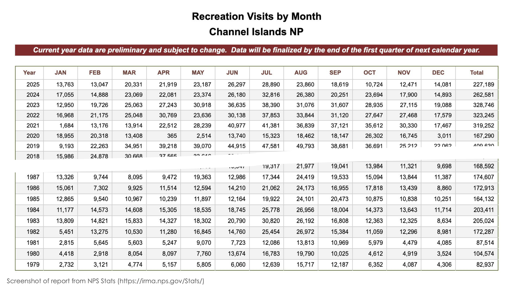

From Static to Interactive: Exploring Interactive Data Visualization
Part of Data to Discovery (Winter 2026) & UCLDW | Feb 12, 2026
Interactive Graphics: Why Consider Them?
Most research figures are designed for static formats —- PDFs, slides, or printed pages —- where the message is fixed and the reader follows a predefined path. Interactive graphics offer a different mode of engagement. Instead of presenting a single, frozen view of the data, they support details on demand, help manage large or multi-dimenstional datasets, and allow different audiences to ask different questions of the same underlying data. Thus interactive graphics and support data exploration, transparency, and reuse.
This Quarto page, we’ll explore interactive graphics as a spectrum. Using the same data set throughout, we’ll move from interactive table using DT to interactive plots using plotly and shiny, highlighting what each apporach make easier and where it may be sufficient on its own.
The dataset
We pulled monthly recreation visitor data to 8 California National Parks from the National Park Services. The data span multiple decades and capture how visitation varies across parks and season.
As an example, let’s take a look at what visitor data for Channel Islands National Park look like

Screenshot of visitor data for Channel Island from NPS
You can explore the full dataset using the following lines of code (💡 click on the triangle below to expand the code chunk)
Code
# load librarieslibrary(here)library(readr)library(dplyr)library(tidyr)here::i_am("d2d-interactive/index.qmd")# import and view data in wide formatca_np_wide_path <-here("d2d-interactive", "data_processed", "nps_ca-np-rec-visit_wide.csv")ca_np_wide <- ca_np_wide_path %>%read_csv()head(ca_np_wide)# import and view data in long formatca_np_long_path <-here("d2d-interactive", "data_processed", "nps_ca-np-rec-visit_long.csv") ca_np_long <- ca_np_long_path %>%read_csv()head(ca_np_long)
Interactive Tables: Seeing and Scanning the Data
Interactive tables can be a simple and transparent way to explore a dataset. They make the structure of the data explicit and allow audiences to sort, filter, and scan values without committing to a particular visual summary.
The table below shows the monthly visitors to Channel Islands. As you interact with the table, consider the following questions:
How many people visited Channel Islands in Feb of 1995?
Which year had the lowest number of visitors in May?
Within the same year, which months tend to have the highest visitation?
Which decade saw the highest visitation?
Code
library(DT)ca_np_wide %>%filter(Park =="Channel Islands") %>%datatable(caption ='Table 1: Monthly Vistors to Channel Island National Park') %>%# set number formats for readabilityformatRound(columns =3:14, # columns with numeric values digits =0, # no decimalsmark =","# thousand separator )
From Tables to Plots: When Visual Patterns Matter
While tables are excellent for lookup and quick comparison, they make it harder to see broader patterns – such as seasonality or long-term change. Visualization help summarize across time and groups, and interactivty allows us to do this without overcrowding a figure.
The plot below shows the dedacal average monthly visitors to Channel Islands. Try hovering over the lines to see exact values, or clicking on legend items to isolate individual decades. As you explore, consider:
Which decade saw the highest visitation?
Between 2020 and 2025, how many people visited Channel Islands in Feb on average?
How consistent is the seasonal pattern across decades?
Are there any deviations from the overall pattern?
Code
library(ggplot2)library(plotly)library(scales)# add the decadeca_np_decade <- ca_np_long %>%filter(Year >1979) %>%# remove the 70s be we only have data for 1979mutate(Decade = Year - (Year %%10),Month =factor(Month, levels = month.abb, labels = month.abb) ) %>%relocate(Decade, .after = Park)# compute the decadal averageca_np_decade_avg <- ca_np_decade %>%group_by(Park, Decade, Month) %>%summarise(Decadal_avg =as.integer(mean(NoVisitors, na.rm=TRUE))) %>%ungroup()# filter for Channel Island datachannel_island_data <- ca_np_decade_avg %>%filter(Park =="Channel Islands")# graph Channel Island data using ggplotchannel_island_p <-ggplot(data = channel_island_data, mapping =aes(x = Month, y = Decadal_avg, group = Decade, color =as.character(Decade))) +geom_line() +scale_color_manual(name ="Decade", values =c("#C7E9C0", "#A1D99B", "#74C476", "#238B45", "#005A32")) +scale_y_continuous(labels = comma) +ggtitle("Decadal Average of Monthly Visitors to Channel Islands National Park") +theme_bw() +theme(axis.title.x =element_blank(), axis.title.y =element_blank()) # turn ggplot into plotlyggplotly(channel_island_p, tooltip =c("Decade", "x", "y"))
Interactive Apps with Shiny: Letting Users Shape the View
DT and plotly allow viewers to explore a predefined view of the data, but the structure of the analysis, such as which park to display or how time is summarize, is still set in advance. Shiny extends interactivity by allowing uswers to make choices that actively change what is shown. In other words, viewers are no longer just interacting with a figure, they are shaping the analysis itself.
Run the following line of code to launch the Shiny app we created for this workshop on your computer. This Shiny app lets you select different California National Parks and summarize visitation data using different time windows (e.g., 5-year, 10-year, or 20-year averages). As you interact with the app, consider the following questions:
How do seasonal visitation patterns differ between parks?
How does the apparent pattern change when you switch from 5-year to 20-year averages?
Which choices—park selection or time scale—have the biggest impact on what you see?
Shiny is especially useful when you want to support repeated, user-driven exploration or when different audiences may ask different questions of the same dataset. At the same time, it introduces additional complexity around design, hosting, and long-term maintenance (You will have noticed that we have decided not to host our National Park Shiny app). In many cases, an interactive table using DT or interactive plot using plotly may be sufficient; Shiny becomes most valuable when you want to give users control over the questions being asked.
Making Intentional Choices About Interactivity
Interactive graphs are not a single technique or endpoint, but a set of design choices along a spectrum. As we have seen, interactive datatable, plotly, and shiny apps each support different kinds of interaction – ranging from transparent look up and comparison to pattern discovery and user-driven exploration. More interactivity is not always better; the most effective choice ultimately depends on your data, your audiences, and what you want viewers to be able to do. Being intentional about these choices helps ensure that interactive graphics add clarity and insights, rather than complexity for its own sake.